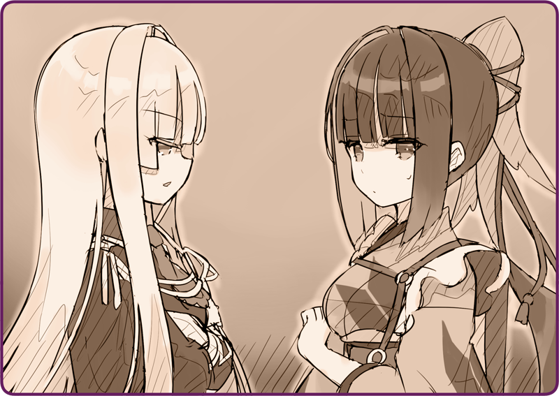

プリマドール・アンコール
06-08 雪華文様(8)
＜＜前のエピソード
目次
次のエピソード＞＞
「こちらのお部屋でお休みください」
「こちらのお部屋でお休みください」
おとめ「すまないな」
今夜はもう遅いので、奥宮少佐は一泊していくことになった。
来客用の部屋に案内する。こういうケースもあろうかと、あらかじめベッドメイクしておいたのだ。
「雪羽は……どうしようかしら」
「雪羽は……どうしようかしら」
とはいえ、人形については考えていなかった。
雪羽「椅子の一脚を貸してもらおうか。それで事足りる」
「そう……？」
「そう……？」
雪羽「奥宮少佐、お部屋の外で待機しております」
おとめ「ああ、ゆっくり休め」
雪羽「はっ」
雪羽は敬礼を、鴉羽は黙礼して、二人は部屋を辞した。

「向かいの部屋が空いているの。よかったら、そっちを使う？」
「向かいの部屋が空いているの。よかったら、そっちを使う？」
雪羽「……部屋？ 人形に部屋など不要だ」
「でも……」
「でも……」
雪羽「まさか、貴様は個室を与えられているのか？」
「……そうね、マスターから部屋を割り当てられて……」
「……そうね、マスターから部屋を割り当てられて……」
雪羽「奇特なものだな。人形は椅子の一脚もあれば休めるというのに」
その声色には、どこか棘があった。
「そんなの……知っているわ。あたしだって従軍中は……」
「そんなの……知っているわ。あたしだって従軍中は……」
雪羽「貴様は３８３連隊所属の自律人形だったそうだな」
「……ええ」
「……ええ」
雪羽「名誉ある部隊だ。それが、こんなところでいたずらに時間を潰していていいのか？」
「あたしは……論理機関に問題があって……修理中なのよ……」
「あたしは……論理機関に問題があって……修理中なのよ……」
雪羽「さっさと初期化すればいい」
「………」
「………」
ずばりそう言われて、鴉羽は言葉を失った。
雪羽「壊れた部品はそっくり新しくすべきだ。問題があるのなら消せばいい」
「あたしだって、早く戦線に復帰したいと思っているわ……」
「あたしだって、早く戦線に復帰したいと思っているわ……」
雪羽「そうだ、それが皇国のためだ。遠間博士も、だからこそわざわざスクラップ同然だった貴様を直したのだろう？」
「え、ええ……そう……思うわ」
「え、ええ……そう……思うわ」
雪羽「……実のところ、すこし期待していたのだ」
ふと目をそらして、ぽつりと呟く。
雪羽「貴様の活躍は聞いていた。その武勇も。こんな僻地で使用人のようなことをするのは、貴様の役割ではない」
「う……」
「う……」
雪羽「言い過ぎたならすまない。台所の椅子を拝借するぞ」
スタスタと歩いて行く。
「分かっているわよ、そんなこと……」
「分かっているわよ、そんなこと……」
廊下を照らす、カンテラの薄暗い灯り。
ひとり残されたあたしは、そう呟くしかなかった。
＊ ＊ ＊
「よいしょっ……」
「よいしょっ……」
スコップで雪をかき分けて、どさどさと沿道に排雪していく。
しばらく暖かい日々が続いていたが、ここ数日は急に冷え込んで、豪雪が降り続いていた。皇国でいう寒の戻りというところだろう。
ローサ「うんっ……しょっ」
それに続いて、すこし小ぶりなスコップを持ったローサが、同じく雪を掻き捨てている。
ローサ「ごめんね、鴉羽お姉ちゃん。手伝ってもらって……」
「あたしは
自律人形
オートマタ
よ、これぐらいへっちゃら」
「あたしは
自律人形
オートマタ
よ、これぐらいへっちゃら」
煙突から蒸気を吹き上げながら、笑顔を見せる。
久しぶりに晴れた日。雪は徐々に溶け始め、すっかり重くなっていた。この調子では雪掻きが大変ではないかと思って、邸宅の雪掻きを終えた後、ローサの自宅へと寄ってみたのだ。案の定で、彼女の身内である祖父は足が悪いため、ひとりで小さな体を動かしていた。スコップを借りて、二人で雪掻きをすること小一時間。
「それにしても、この雪の山はすごいわね」
「それにしても、この雪の山はすごいわね」
自宅の屋根や入り口の雪掻きから始まって、街道へと繋がる道まで差し掛かったところで振り返ると、あちこちにこんもりした雪山が生まれていた。
ローサ「雪だるま作れそう」
「いいわね、もうすぐ終わるし、大きいの作りましょうか？」
「いいわね、もうすぐ終わるし、大きいの作りましょうか？」
ローサ「楽しそう」
頬を赤くしながら、ローサは顔をほころばせた。
目標が出来ると作業も捗る。街道までの通路をすっかり通すと、今度は雪の塊を作り始めた。
「さ、一緒に押して」
「さ、一緒に押して」
ローサ「うんしょ、うんしょ……」
ごろごろと雪を丸めていく。
そのうち、ローサの半分ほどの背丈にまで成長していた。
「胴体がだいぶ大きくなったわね」
「胴体がだいぶ大きくなったわね」
ローサ「え、足じゃなくて？」
「足……？」
「足……？」
ローサ「だって、この上に胴体が付いて、頭が乗っかるんでしょう？」
「それだと三段になっちゃうけど」
「それだと三段になっちゃうけど」
ローサ「雪だるまって普通三段だよ」
「そんなことないわ。雪だるまっていうからには……こう、だるま形よね」
「そんなことないわ。雪だるまっていうからには……こう、だるま形よね」
ローサ「そもそも、だるま形ってなに？」
「だるまっていうのは、ええと……とにかく、頭と胴体の二段よ」
「だるまっていうのは、ええと……とにかく、頭と胴体の二段よ」
ローサ「それって足はどこにあるの？」
「足は……無いわ」
「足は……無いわ」
ローサ「変なの」
くすくす笑っている。どうやら雪だるまひとつとっても、異国では考え方が違うらしい。
「いいわ、じゃあ三段で作りましょう」
「いいわ、じゃあ三段で作りましょう」
ローサ「だるま形じゃなくていい？」
「郷に入っては郷に従えと言うでしょ」
「郷に入っては郷に従えと言うでしょ」
もう二つほど雪の塊をせっせと作って、一緒に持ち上げていく。さすがに頭の段を乗せるのは難儀したが、苦労の末、やがて見上げるほど大きな雪だるまが誕生していた。
「出来た……」
「出来た……」
ローサ「すごい……わたし、雪だるま作ったのはじめて」
「この家の守り神が出来たわね……あら？」
「この家の守り神が出来たわね……あら？」
ふと、微かに焦げたような香りが漂う。
慌てて煙突を見ると、微かに煙が黒っぽくなっていた。
ローサ「鴉羽さん、どうしたの？」
「ごめんなさい、燃料が切れかけているみたい……」
「ごめんなさい、燃料が切れかけているみたい……」
備蓄分を節約しようと、今朝は燃料を控えめにしたのだ。雪かきの労働量を見積もれていなかった。
ローサ「それって、うちの機械人形と同じので大丈夫？」
「油分ならなんでも大丈夫なんだけど……でも、心配要らないわ。家に帰るぐらいは保つから……」
「油分ならなんでも大丈夫なんだけど……でも、心配要らないわ。家に帰るぐらいは保つから……」
ローサ「ダメ。なにかあったらどうするの？」
「そ、そう……？」
「そ、そう……？」
ローサ「うちで飲んでいって。いま用意するから」
「あ、待って。悪いわ……」
「あ、待って。悪いわ……」
ローサ「いいからこっち、早く！」
ローサの小さな手に引かれて、屋内へと招かれていた。
＜＜前のエピソード
次のエピソード＞＞
こちらのフォームよりご意見・ご感想をお寄せください
もれなくデジタルコンテンツをプレゼント！
執筆：丘野塔也 挿絵：まろやか ＣＶ：楠木ともり（鴉羽）
目次へ戻る
©VISUAL ARTS / Key
Bản dịch tiếng Việt thực hiện bởi Vietnam Key FanClub